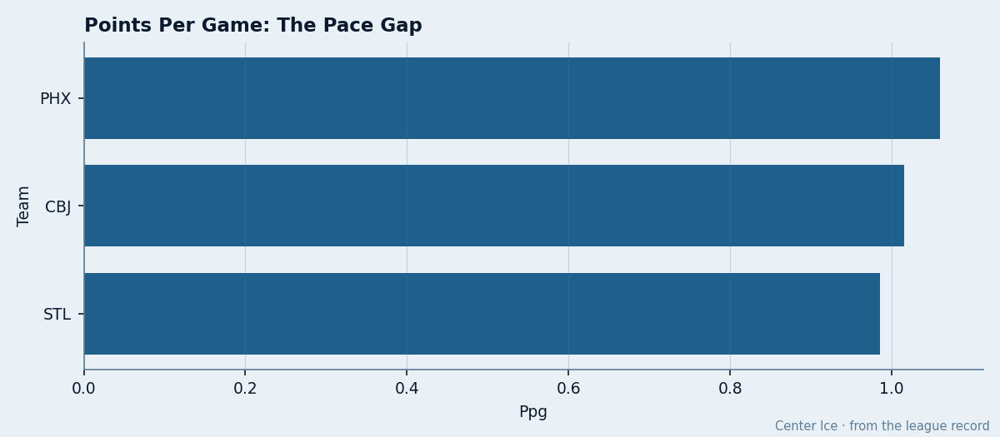
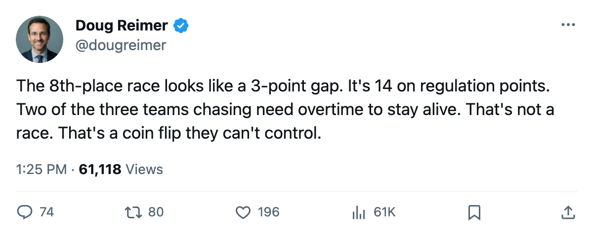
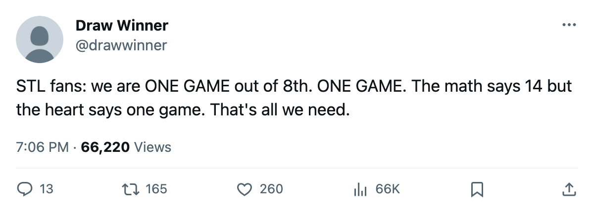

The 8th-Place Gap Is 14 Points When You Strip the Overtime. The Table Says 3.
PHX holds the West's final playoff spot by 3 points, but its regulation-only lead over CBJ is 14 and over STL is 16. The chase is built on coin flips.
 Doug ReimerAnalytics editor, ex-video coach · The Slot Report
Doug ReimerAnalytics editor, ex-video coach · The Slot Report
 Phoenix Coyotes leads
Phoenix Coyotes leads  Columbus Blue Jackets by 3 points for the 8th and final playoff berth in the West. On regulation points alone, the gap is 14.
Columbus Blue Jackets by 3 points for the 8th and final playoff berth in the West. On regulation points alone, the gap is 14.
The method is simple. Every point earned in a game that went past regulation (each OT win worth 2, each OT loss worth 1) is stripped from the total. What remains is the point haul a club built by winning inside 60 minutes. The Bureau's standings carry the OT split; the calculation below uses it.
Phoenix Coyotes sits 8th at 71 points in 67 games. Strip its 11 OT points (2 OT wins, 7 OT losses) and 60 regulation points remain. Columbus Blue Jackets sits 9th at 68 points. Strip its 22 OT points (8 OT wins, 6 OT losses) and the base drops to 46.  St. Louis Blues sits 10th at 67 points; after removing 23 OT points (9 OT wins, 5 OT losses), it stands at 44.
St. Louis Blues sits 10th at 67 points; after removing 23 OT points (9 OT wins, 5 OT losses), it stands at 44.
| Club | GP | Pts | OTW | OTL | OT Pts | Reg Pts | OT Share | Diff | Left |
|---|---|---|---|---|---|---|---|---|---|
| PHX | 67 | 71 | 2 | 7 | 11 | 60 | 15.5% | -11 | 15 |
| CBJ | 67 | 68 | 8 | 6 | 22 | 46 | 32.4% | -3 | 15 |
| STL | 68 | 67 | 9 | 5 | 23 | 44 | 34.3% | -40 | 14 |
PHX earns 15.5% of its points in games past regulation. CBJ earns 32.4%. STL earns 34.3%. The chasing clubs need the overtime coin flip to go their way roughly one time in three to hold their current standing. PHX needs it one time in seven.

The race is closer on paper than in points built
At current pace, PHX projects to 71 × (82 ÷ 67) = 87 points by season's end; CBJ to 83, STL to 81. Those projections assume the pace holds, which means the OT wins keep landing. A cold streak in tight games collapses this projection faster than it collapses a regulation-built point total.
Columbus Blue Jackets enters tonight holding a 3-game win streak: 3-0 over  Calgary Flames, 1-0 over
Calgary Flames, 1-0 over  Vancouver Canucks, 2-1 over
Vancouver Canucks, 2-1 over  Detroit Red Wings. All three were regulation wins. That run is exactly what CBJ needs to keep pace: points that do not depend on an extra period. But 8 of its 30 wins so far have come in overtime. The base of 46 regulation points is the floor this club has built over 67 games, and it would put them in 12th place in the East.
Detroit Red Wings. All three were regulation wins. That run is exactly what CBJ needs to keep pace: points that do not depend on an extra period. But 8 of its 30 wins so far have come in overtime. The base of 46 regulation points is the floor this club has built over 67 games, and it would put them in 12th place in the East.
St. Louis Blues faces  San Jose Sharks tonight. It has played 68 games, one more than CBJ, and sits a further point behind at 67. Its goal differential of -40 is the worst of any club still mathematically alive for a berth. STL has been outscored by 40 across 68 games and still holds 67 points because STL won 9 games in overtime. Without those 9 OT victories worth 18 points, the record reads 22-32-5 for 49 points. No club in either conference makes a playoff on 49.
San Jose Sharks tonight. It has played 68 games, one more than CBJ, and sits a further point behind at 67. Its goal differential of -40 is the worst of any club still mathematically alive for a berth. STL has been outscored by 40 across 68 games and still holds 67 points because STL won 9 games in overtime. Without those 9 OT victories worth 18 points, the record reads 22-32-5 for 49 points. No club in either conference makes a playoff on 49.
The ceiling problem
STL has 14 games left. A perfect run of 28 points lifts it to 95. PHX has 15 games left; a perfect run lifts it to 101. STL cannot reach 101. If PHX wins 9 of its final 15 (18 points, to 89 total) STL must win all 14 (28 points, to 95) to pass. That is not arithmetic that favors the chaser.
The deadline falls in 8 days. The clubs chasing PHX need to acquire men who score in the first 60 minutes, not men who extend games. CBJ's top scorer,  Geoff Sanderson86, sits at 106 points in 67 games on 21.9 minutes a night and a pace of 130. His 58 goals include game-winners that close games inside regulation. The problem is depth: CBJ's second-highest scorer is not in the league's top 30. STL carries
Geoff Sanderson86, sits at 106 points in 67 games on 21.9 minutes a night and a pace of 130. His 58 goals include game-winners that close games inside regulation. The problem is depth: CBJ's second-highest scorer is not in the league's top 30. STL carries  Keith Tkachuk90 at 90 points and
Keith Tkachuk90 at 90 points and  Doug Weight85 at 86, both graded 86 in the Book, but the club's 9 OT wins tell you those two are not closing games quickly enough.
Doug Weight85 at 86, both graded 86 in the Book, but the club's 9 OT wins tell you those two are not closing games quickly enough.
PHX has the lowest OT share in the entire Western Conference. Its 30 wins came in regulation 28 times. The club scores 2.91 goals per game and allows 3.07. That -11 differential is a real deficiency, but it has produced 60 regulation points. CBJ's problem is scoring depth. STL's is a -40 differential it cannot outplay.
What the next 8 days look like
The sheet puts 17 meetings between today and the deadline across the three clubs. CBJ hosts  Dallas Stars tonight and visits
Dallas Stars tonight and visits  Pittsburgh Penguins tomorrow. STL hosts San Jose Sharks tonight and visits Phoenix Coyotes on March 12 in what is effectively a 4-point game. PHX hosts Detroit Red Wings on March 12.
Pittsburgh Penguins tomorrow. STL hosts San Jose Sharks tonight and visits Phoenix Coyotes on March 12 in what is effectively a 4-point game. PHX hosts Detroit Red Wings on March 12.
The March 12 meeting between STL and PHX already carries a 2-2 record this season with 1 overtime loss for STL included. PHX won the most recent 3-2 on March 8 at home. That game went to overtime; the result reads OTL in STL's log, meaning PHX collected 2 points in a game STL had tied with 5 minutes left. That single OT game is worth 2 of the 11 that inflate PHX's total. STL needs to win games like that inside 60.
The table says this race is 3 points. The regulation base says 14. The deadline is 8 days away and the question for CBJ and STL is not whether they can acquire a scorer. It is whether they can acquire one who finishes before the clock hits zero.

